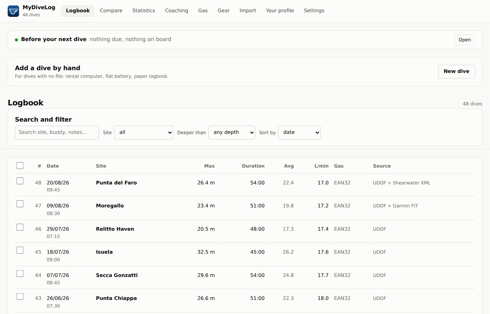
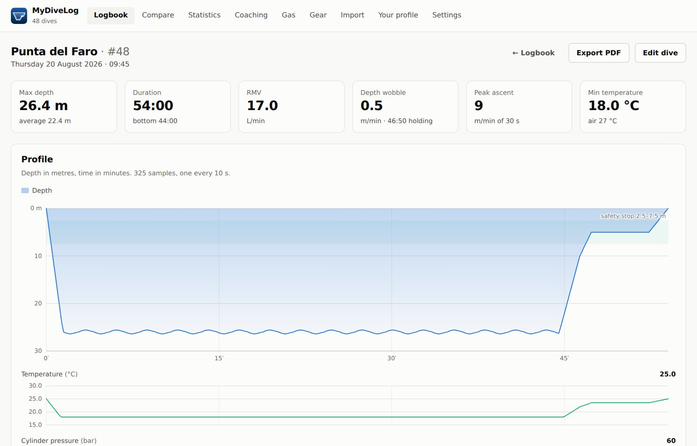
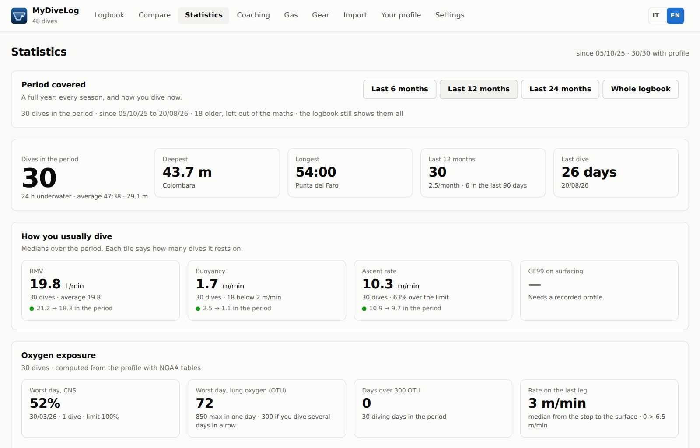
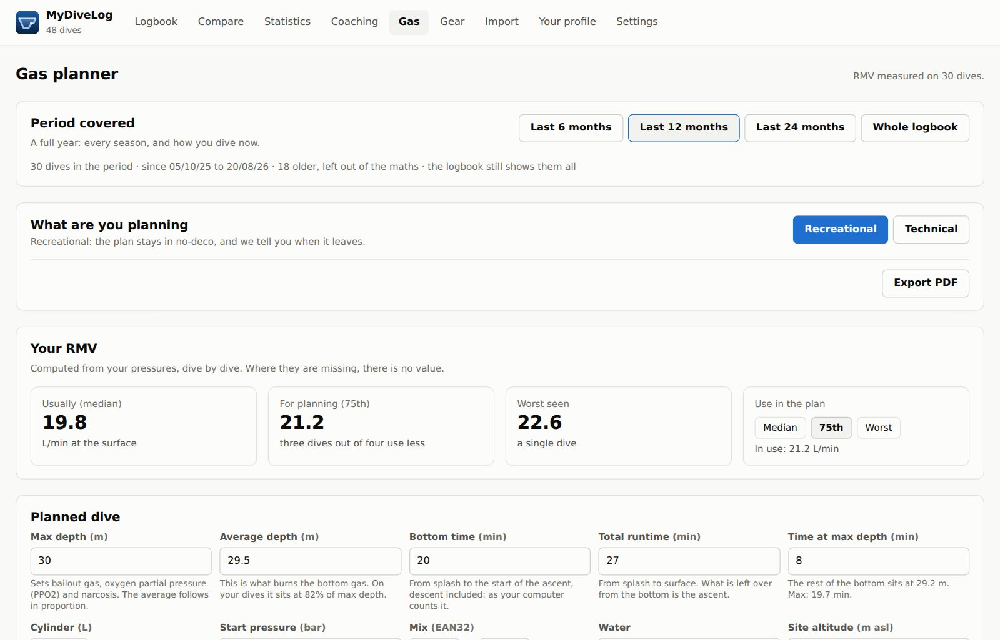
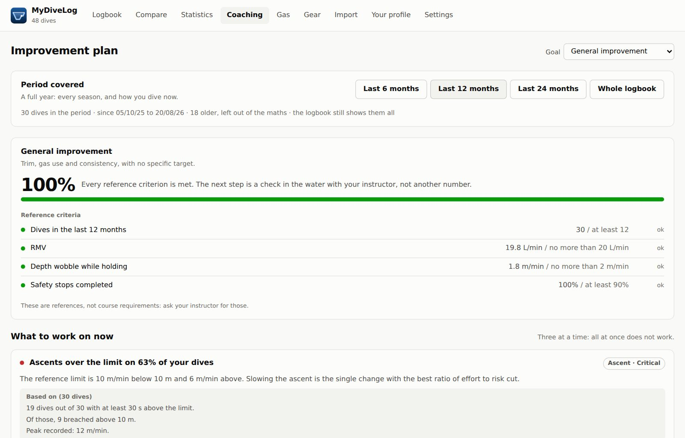

Every dive you have ever made, in one archive — even if you have changed computers three times. Merged without duplicates, analysed, and holding every field Italian law 70/2026 asks of a dive logbook — ready as a PDF. Free, no account, and nothing leaves your device.
You wear one computer and carry a backup. You changed computer a few years ago. You download both from the manufacturer app and from the device. In all three cases the same dive ends up in two different files, and neither of them is complete. A logbook that makes you pick one makes you throw away half of what you have.
Neither entry disappears, and no data is left behind.
Two computers never agree on the time. The offset is inferred across your whole logbook, and the match is confirmed on the shape of the profile — not on the timestamp.
Between a denser profile and one that also knows about decompression, the second wins — and the first stays, because that is where rates and buoyancy are measured properly.
Every dive lists the sources it was built from. When a value is missing you know which computer never wrote it — instead of wondering whether the program lost it.
Since 10 May 2026 Italian law — law 70/2026, article 12(8) — requires every diver to keep a dive logbook with thirteen specific entries. And it says something that changes everything: it may be digital. Not «tolerated in digital form»: it is written in the text.
MyDiveLog keeps all thirteen, the guide's signature included.
With a finger, on the phone you have on the boat. The mark stays attached to that dive, with a name and a date, and reprints crisply on paper: it is stored as strokes, not as a picture.
Planned depth never becomes the depth reached, and no field fills itself in. On a document someone countersigns, an invented value is worse than a missing one.
A logbook matters at the moment someone asks for it. Every dive exports to PDF with the thirteen letters spelled out, from the Mac and from the iPhone: you send it there, on the boat, five minutes after surfacing.
A dive with friends has no centre and no guide, and that does not make it irregular. No red fields, no warnings: the app keeps the data, it does not lecture you.
This is not legal advice and the application does not claim to be «compliant»: it holds the fields the rule lists, and compliance belongs to whoever fills the logbook in. Article 12(8) sits in the article governing dive centres, and whether the duty also binds divers going out on their own is not settled by the text.
A logbook for divers who want to understand what their data is telling them, not just store it.
UDDF, Shearwater (XML and the native log), Scubapro LogTRAK, Garmin FIT, Subsurface, CSV. The format is detected from the content, not from the file extension.
Shearwater and Scubapro/Uwatec, with a bookmark: the second time round it downloads only the new dives, not the whole memory.
Bühlmann ZH-L16C with gradient factors, sixteen compartments, oxygen exposure by local day, buoyancy oscillation and ascent rates — each figure carrying its own stated reliability.
Gas and decompression: multi-level, automatic switches at the MOD, CCR with setpoint and real diluent, bailout and contingencies. Consumption comes from your own dives, not from a textbook.
Statistics, trends and suggestions with the numbers underneath: how many ascents outside the limits, how many safety stops skipped, what repetitive dives actually cost you.
One page per dive, with the thirteen fields the Italian rule lists, the profile drawn and the guide's signature. It is a real file: from the phone you send it to whoever asks — a centre, an instructor, an insurer — without going home first.
The Mac app checks whether a new version exists and tells you. Downloading and installing it is your call: every update is signed, and without a valid signature nothing gets installed.
Full JSON backup, UDDF export, printable logbook and dive plan. The local archive is a SQLite file you can open with any tool.
Real screenshots, taken from the app with a sample logbook: nothing retouched, and nothing the program does not actually do.





If you use more than one device, you can keep your logbook aligned. You sign in with an Apple or Google account and the app creates a database that is yours alone: there is nothing to configure, and dives travel directly between the application and that database.
Signing in is optional, and syncing is never automatic. The logbook opens, imports and analyses without ever seeing an account, because the archive is on your device. And nothing leaves until you press Sync: a logbook gets read on a boat, where there is no network.
Every person gets a database physically separate from everyone else's — not a row in a shared table. The service that hands out the keys keeps no list of users and never sees your dives: it says who you are and gives you a key that lasts two hours. You can delete your account from inside the app, and the database with it. Details in Privacy.
MyDiveLog is free software under the MIT licence: the code can be read, copied and modified. It costs nothing, has no subscriptions, no advertising, and collects no usage statistics.
The macOS package is in the releases: signed with a Developer ID and notarised by Apple, so it opens with a double click. It needs an Apple Silicon Mac.
The iPhone version runs, and it has been submitted to the App Store: meanwhile you build it from source, and the instructions are in the repository.
They exist, you can download them, and nobody has ever tried them. There is no PC and no Android phone here: inside is the same engine that runs on Mac and iPhone, with fourteen hundred automated checks behind it, but no real person has taken those two builds all the way round. If you use one, you are the first.
They do everything the Mac version does: read all seven file formats, download over Bluetooth from every model in the catalogue, analyse, plan, export the logbook as a PDF, and signing in with Google or Apple works.
One difference, and it is Android's: it does not update itself. Windows does — the app tells you when a new version is out, just like on the Mac — while on Android an app that installed itself would have to ask for a permission scarier than it is worth. When a new version appears, download the APK again from here.
Windows will call the program unknown, and it is right: signing it costs a yearly certificate a free project does not buy. Open it with “More info” → “Run anyway”. Android will ask permission to install from this source: the same question it asks for any app outside the Play Store.
Neither is signed by an authority, so the file cannot tell you where it came from. Its SHA-256 fingerprint can, and it is published next to the package on the releases page: if it matches the file you downloaded, it is ours.
MyDiveLog is not a dive computer and must not be used to make decisions in the water. Its decompression calculations, plans and analyses exist to study the dives you have done and prepare the ones you are going to do: they do not replace your dive computer, your training or your judgement. Scuba diving carries risks, including death.
Free, no account and no subscription. Download it, drop in the files you already have, and a minute later your whole history is in a single list.
MyDiveLog is open source and free. If you like it and want to help keep it alive, you can do it here.
Buy me a coffeeOpens PayPal. No account needed — a card works too.